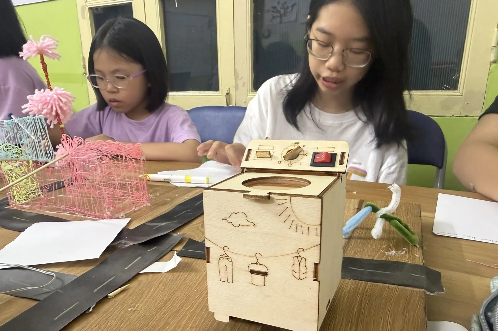

Lớp Mercury dành cho ai?
Mercury là lớp Toán Cambridge dạy hoàn toàn bằng tiếng Anh. Con học tư duy toán — mô hình thanh, tỉ lệ, phần trăm, bài toán nhiều bước — và đồng thời học ngôn ngữ toán học (ước lượng, thương, so sánh) để giải thích cách nghĩ rõ ràng.
- Con học Toán tốt ở trường và muốn học thêm thuật ngữ, cách trình bày lời giải bằng tiếng Anh.
- Con thích bài toán thử thách, không theo mẫu có sẵn.
- Gia đình muốn con học tiếng Anh qua nội dung thay vì chỉ học từ vựng rời rạc.
- Con muốn làm quen với chương trình Toán Cambridge.
Bài kiểm tra xếp lớp bằng một bộ bài toán để xác định lỗ hổng và thế mạnh của con theo từng chủ đề; kết quả quyết định nhóm và mức hỗ trợ phù hợp.
Vì sao học Toán bằng tiếng Anh?
Mercury áp dụng nguyên lý học ngôn ngữ qua nội dung: con dùng tiếng Anh để thực sự làm việc — giải bài toán, giải thích và bảo vệ lời giải — nên từ vựng và cấu trúc câu gắn với ý nghĩa thay vì học thuộc. Mỗi bài có sơ đồ, đồ vật cụ thể và khung câu để hỗ trợ ngôn ngữ; cuối đơn vị, con trình bày lời giải 60–90 giây gồm các bước và cách kiểm tra lại. Xem bằng chứng nghiên cứu về cách học này trong bài ELA là gì?
Vì sao cách này hiệu quả hơn? Xem 7 bằng chứng nghiên cứu trong bài ELA là gì? ELA khác ESL thế nào.
Nội dung, mục tiêu và phương pháp
Ý tưởng lớn
- Lý luận định lượng
- Mô hình hóa thế giới thực
- Giao tiếp toán học
Câu hỏi cốt lõi
- Một bài toán có thể được biểu diễn bằng những cách nào?
- Những giả định nào làm cho mô hình hữu ích?
- Làm thế nào để em giải thích tư duy của mình rõ ràng?
Kết quả mong đợi
- Thuật ngữ toán học tiếng Anh
- Bài toán đố phi tuyến
- Trình bày giải thích tư duy
Tiêu chí thành công
- ≥75% trong bộ đề cuối kỳ
- Sử dụng từ vựng chính xác (quotient, estimate, compare)
- Bài trình bày miệng 60–90 giây với các bước và kiểm tra
Hành trình học tập
- Đầu vào: bộ bài kiểm tra xác định khoảng trống và điểm mạnh.
- Unit A: hiểu số và mô hình thanh; câu hỏi lý luận hàng ngày; bài thuyết trình nhỏ.
- Unit B: tỉ lệ/phần trăm; bài toán nhiều bước; nhật ký phản chiếu.
- Điểm chốt: ôn tập tổng hợp; dạy lại mẫu lỗi; bài thuyết trình lần hai.
- Tiếp theo: chuẩn bị Cambridge checkpoint hoặc chuyển sang dự án khoa học.
Phương pháp giảng dạy
- Ví dụ có giải → hướng dẫn giảm dần
- Chiến lược mô hình thanh và đơn vị
- 4 bước Polya với nhật ký phản chiếu
- Luyện tập xen kẽ/giãn cách
Kết nối INTASC (theo khóa học)
- Chuẩn 4 – Kiến thức nội dung: Mô hình khái niệm trước thủ tục; từ vựng toán tiếng Anh dạy với hình ảnh và khung.
- Chuẩn 5 – Ứng dụng nội dung: Bài toán đố phi tuyến và bộ dữ liệu thực; học sinh mô hình hóa, giải và bảo vệ lựa chọn.
- Chuẩn 6 – Đánh giá: Phân tích lỗi trên phiếu ra về; kiểm tra mức độ làm chủ để điều chỉnh nhóm dạy lại.
- Chuẩn 2 – Khác biệt người học: Bài thách thức và hỗ trợ; vật thể thao tác và sơ đồ chuyển từ cụ thể sang trừu tượng.
- Chuẩn 3 – Môi trường học: Quy tắc cho trò chuyện toán học và nỗ lực có hiệu quả; mong đợi trình bày bảng được nêu rõ.
- Chuẩn 8 – Chiến lược giảng dạy: Nghĩ to, giảm dần ví dụ và trình bày bảng với giao thức phản biện.
Ai dạy con?
Giáo viên có chứng chỉ giảng dạy do bang New Jersey (Hoa Kỳ) cấp phụ trách chương trình và dạy theo chuẩn nghề nghiệp giáo viên InTASC của Hoa Kỳ — các tiêu chí này được nêu cụ thể trong từng mục của trang.
HEC có đội ngũ trợ giảng người nước ngoài và người Việt được đào tạo, tốt nghiệp chuyên ngành tiếng Anh hoặc sư phạm, hỗ trợ các nhóm nhỏ thảo luận, chữa bài và giúp con hiểu nhiệm vụ khó. Nghiên cứu của Education Endowment Foundation (Anh) cho thấy hoạt động ngôn ngữ nói do trợ giảng được đào tạo dẫn dắt hiệu quả tương đương giáo viên.
Lộ trình ELA tại HEC
Mỗi lớp là một bậc trong lộ trình ELA từ mầm non đến IELTS; HEC xếp lớp theo trình độ chứ không chỉ theo tuổi.
Chuẩn tham chiếu
- Giáo trình Cambridge Math
- Chuẩn nghề nghiệp giáo viên InTASC (Hoa Kỳ)
- Giáo viên có chứng chỉ bang New Jersey
- Được Sở GD&ĐT Hà Nội cấp phép
Câu hỏi thường gặp
Lớp Mercury dành cho học sinh như thế nào?
Học sinh muốn học Toán Cambridge bằng tiếng Anh: làm quen thuật ngữ toán học, giải bài toán có lời văn không theo mẫu và giải thích cách nghĩ. HEC xếp nhóm sau bài kiểm tra đầu vào miễn phí.
Học Toán bằng tiếng Anh có làm con khó theo kịp không?
Lớp dùng sơ đồ, đồ vật cụ thể và khung câu để hỗ trợ ngôn ngữ, và đi từ mô hình khái niệm đến thủ tục. Bài kiểm tra đầu vào xác định lỗ hổng và thế mạnh để xếp con vào mức phù hợp.
Sau khóa Mercury, con đạt được những gì?
Đạt từ 75% bài tập cuối kỳ; dùng chính xác từ vựng toán học (quotient, estimate, compare); trình bày lời giải 60–90 giây có các bước và cách kiểm tra.
Học xong Mercury con học tiếp gì?
Chuẩn bị bài kiểm tra Cambridge (checkpoint) hoặc chuyển sang các dự án khoa học.
Lịch học và học phí lớp Mercury thế nào?
Chủ nhật, 16:30–18:00. Học phí 210.000₫ cho mỗi buổi 90 phút, khoảng 840.000–1.050.000₫ mỗi tháng (4–5 buổi), thu theo số buổi thực học, giảm 5% cho anh/chị/em ruột và hiện chưa thu phí giáo trình.